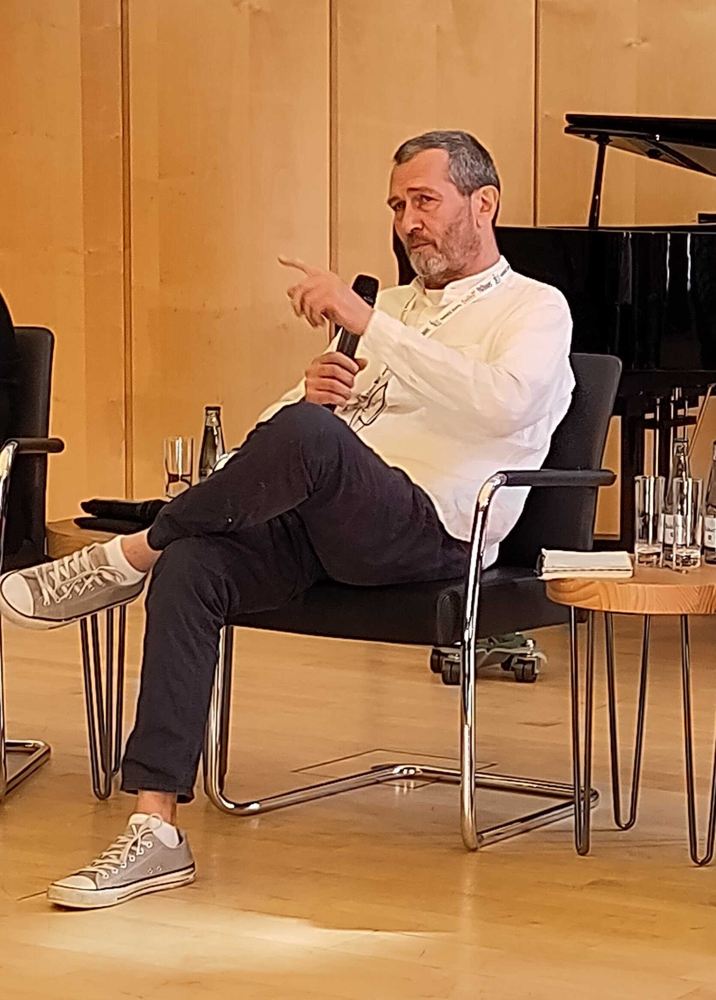

News
Ankündigung Infostunde im Februar 2025
24. Januar 2025
Es geht wieder los - die nächste Infostunde wird am 03. Februar stattfinden.
Wir werden über das EZB Paket mit den einzelnen Subskriptionszeitschriften informieren.
O du fröhliche
20. Dezember 2024
Das GOKB-Team wünscht allen frohe und erholsame Weihnachtstage und einen guten Rutsch ins Jahr 2025!

Ankündigung Infostunde im Januar 2025
20. Dezember 2024
Die Infostunde im Januar enfällt. Im Februar geht es dann weiter. Infos dazu folgen.
Release 1.8 erschienen
28. November 2024
Das aktuelle Release 1.8, das mit dem vorliegenden Update 1.8.2 final veröffentlicht ist, aktualisiert die Benutzeroberfläche auf die neueste Version 3 des Frameworks Vue. Weitere Verbesserungen finden sich in der Registrierung, den Prüfanfragen, dem KBART-Import und der Anzeige der Kuratorengruppen.
Eine wichtige Neuerung ist die Auszeichnung der Quellenherkunft von Paketen, sodass direkt ersichtlich ist, ob ein Paket aus der EZB oder einem anderen Repositorium eingespielt wurde. Zudem wurde eine Schnittstelle zur we:kb geschaffen, um Pakete von dort in die GOKB zu übernehmen.
Näheres zum Release 1.8 finden Sie hier.
Ankündigung Infostunde im Dezember 2024
27. November 2024
Die nächste Infostunde wird am 02. Dezember stattfinden.
Wir werden uns dem Rückblick auf das Anwendertreffen in Göttingen, der neuen Mailingliste, Änderungen in der Linkstruktur bei GOKB-Komponenten sowie dem Thema Title-IDs widmen.
Ankündigung Infostunde im November 2024
29. Oktober 2024
Die nächste Infostunde wird am 04. November stattfinden.
Wir werden Ihnen die Neuerungen aus dem Release 1.8 vorstellen.
GOKB-Anwendertreffen in Göttingen
09. Oktober 2024
Gute Nachrichten - es geht los!
Wir laden Sie herzlich zum GOKB-Anwendertreffen in Göttingen vom 06. bis 07. November 2024 ein. Die Veranstaltung wird in der Alten Mensa am Wilhelmsplatz in der Göttinger Innenstadt stattfinden.
Melden Sie sich einfach bis zum 23. Oktober 2024 über die GBV/VZG Website an.
Alle wichtigen Infos zur Veranstaltung finden Sie in der Agenda.
Am 06. November wird es ein gemeinsames Abendessen in Form eines Buffets im Restaurant Bullerjahn geben. Die Kosten dafür sind in der Teilnahmegebühr enthalten. Die Kosten für Getränke und à la carte Gerichte müssten vor Ort selbst übernommen werden.
Wir freuen uns auf Sie und einen spannenden Austausch mit Ihnen!
Ankündigung Infostunde im Oktober 2024
02. Oktober 2024
Die nächste Infostunde wird am 07. Oktober stattfinden.
Dieses Mal widmen wir uns dem Rückblick auf die WOLFcon 2024 in London, bei der die GOKb ein wichtiges Thema war, außerdem sind wir an Ihren Erfahrungen bei der Bearbeitung von KBART-Dateien interessiert.
Neuer Termin für ZDB-Fachtreffen
18. September 2024
Das ZDB-Fachtreffen wurde auf den 22. Oktober 2024 verschoben. Es findet von 10 bis 11:30 Uhr statt. Nähere Infos erhalten Sie unter: Online-ZDB-Fachtreffen
Anküdigungen GOKB auf der Wolfcon 2024 & bei den FOLIO Praxistagen
02. September 2024
Das GOKB Team wird auf den beiden Veranstaltungen an folgenden Terminen vertreten sein:
Wolfcon 2024 in London (24. bis 26. September)
• 24.09.2024 um 11:00 Uhr: GOKB Technical Update (M. Horn)
• 25.09.2024 um 13:00 Uhr: Building Bridges: GOKB and FOLIO ERM supporting e-resource workflows (D. Rupp & M. Schildt)
• 25.09.2024 um 14:00 Uhr: Working with and in the GOKB - what's next? (Working meeting)
• 26.09.2024 um 13:30 Uhr: GOKB Panel (D. Rupp & C. Seegert)
FOLIO Praxistage in Bamberg (30. September bis 01. Oktober)
• 01.10.2024 von 10:30 bis 12:00 Uhr: Workshop Von GOKB zu FOLIO - bessere Daten durch praktische Datenpflege (K. Sievers)
Infostunde im September 2024
28. August 2024
In der Infostunde am 02. September werden wir uns dem Thema Lokale Pakete und Pick&Choose-Pakete in der GOKB widmen.
ZDB-Fachtreffen im September 2024
23. August 2024
Das GOKB-Team wird beim virtuellen ZDB-Fachtreffen am 17. September 2024 von 10 bis 11:30 Uhr dabei sein.
Neue Infos - GOKB Anwendertreffen im November 2024 in Göttingen
20. August 2024
Wir haben neue Infos zum GOKB Anwendertreffen in Göttingen. Das Treffen wird am 06. November um 13 Uhr beginnen und endet am 07. November um 15.30 Uhr. Der Flyer ist entsprechend aktualisiert.
Der Link zur Anmeldung, das Programm und weitere Informationen werden schnellstmöglich veröffentlicht.
Infostunde im August 2024
12. Juli 2024
Die Infostunde im August entfällt aufgrund der Sommerferien.
Veröffentlichung der BiblioCon 2024 Vorträge
08. Juli 2024
Die BiblioCon 2024 ist vorbei, aber es können nun die Vorträge eingesehen werden. Die Verlinkungen dazu finden Sie unter unserer Rubrik "Präsentationen"
Ankündigung Infostunde im Juli 2024
28. Juni 2024
Die nächste Infostunde wird am 01. Juli stattfinden von 15 bis 16 Uhr. Es werden zwei Themen vorgestellt: Neuerungen in der GOKb-Anbindung des FOLIO-Releases Quesnelia und Bearbeitung von Referenztiteln in GOKB und ZDB.
Infostunde im Juni 2024
24. Mai 2024
Aufgrund der BiblioCon in Hamburg entfällt die Infostunde im Juni.
Save the date - GOKB Anwendertreffen im November 2024 in Göttingen
06. Mai 2024
Wir laden unsere Anwender*innen herzlich zu unserem ersten GOKB Anwendertreffen in Göttingen in der Alten Mensa ein.
Reservieren Sie sich den 06. und 07. November 2024.
Weitere Informationen finden Sie in unserem Flyer.
Save the date(s) - die GOKb auf der BiblioCon 2024
07. Mai 2024
Das Team der GOKb wird auch in diesem Jahr auf der BiblioCon in Hamburg vor Ort sein mit folgenden Veranstaltungen:
• Mittwoch, 05.06. 09:00-10:30 Uhr Vortrag in "Transformation braucht Daten": Aktuelle Nutzungsszenarien der GOKb in der Verbundlandschaft von 09:00 bis 09:30 Uhr
• Mittwoch, 05.06. 09:00-10:30 Uhr Vorträge in "ZDB-Anwendertreffen": Die Global Open Knowledegbase (GOKb) – Aktuelles von 10:00 bis 10:15 Uhr & Bearbeitung von Referenztiteln in GOKb und ZDB von 10:15 bis 10:30 Uhr
• Mittwoch, 05.06. 15:30-16:00 Uhr Präsentation am Stand der Verbünde: GOKb live - Ihr Werkzeug für Metadaten von E-Ressourcen
• Donnerstag, 06.06. 15:30-16:30 Uhr #Freiraum24: Global Open Knowledebase (GOKb): Austausch, Information, Diskussion
• Donnerstag, 06.06. 16:30-18:30 Uhr Hands-on Lab: Prüfanfragen und Paket-Metadaten: Datenoptimierung in der Global Open Knowledgebase (GOKb)
Abseits dieser Termine können Sie uns natürlich jederzeit ansprechen. Wir freuen uns auf Sie!
Mehr Infos finden Sie unter dem Punkt Programm auf der offiziellen Website.
Ankündigung Infostunde im Mai 2024
30. April 2024
Die nächste Infostunde wird am 06. Mai stattfinden von 15 bis 16 Uhr. Der Schwerpunkt der Sitzung wird das Thema Anbieter sein.
Ankündigung Infostunde im April 2024
28. März 2024
Die nächste Infostunde wird am 08. April stattfinden von 15 bis 16 Uhr. Wir werden Ihnen die geplante Umfrage zu "Identifikatoren von E-Ressourcen" vorstellen.
Anmeldung für Mailinglisten
05. März 2024
Es gibt nun Mailinglisten, in denen Sie sich anmelden können, um zukünftig Updates und News sowie auch die Einladung zur Infostunde zu erhalten. Wir möchten Sie bitten, sich spätestens bis zum 08. April 2024 einzutragen. Die Listen finden Sie auf der Seite ole-lists.openlibraryfoundation.org. Auswählen können Sie zwischen den beiden Listnamen gokb-updates-dach (deutschsprachig) und gokb-updates (international). Füllen Sie die ersten beiden Felder unter dem Punkt "Subcribe" aus und klicken Sie anschließend im Feld List den Namen der gewünschten Mailingliste an. Das Kästchen unter den Feldern empfehlen wir frei zu lassen.
Ankündigung Infostunde im März 2024
21. Februar 2024
Die nächste Infostunde wird am 04. März stattfinden von 15 bis 16 Uhr. Wir werden auf die Fallstricke bei KBART-Dateien und die Organisation der Community eingehen.
Release 1.7 erschienen
25. Januar 2024
Das aktuelle Release 1.7 integriert die DDC-Klassifikation auf Titel- und Paketebene. Für Journals wird die DDC-Klassifikation automatisiert aus der ZDB in die Referenztitel übernommen. Außerdem sind mehr Sichten der GOKb durch eindeutige URLs ansteuerbar, sodass URLs zu einzelnen Reitern, konkreten Suchen und Pakettiteln gespeichert werden können. Näheres zum Release 1.7 finden Sie hier.
Ankündigung Infostunde im Februar 2024
12. Januar 2024
Die nächste Infostunde wird am 05. Februar stattfinden von 15 bis 16 Uhr. Wir werden die Neuerungen aus dem Release 1.7 vorstellen.
Wir trauern um Hans-Jörg Lieder

Mit großer Bestürzung haben wir vom plötzlichen Tod unseres sehr geschätzten Kollegen Hans-Jörg Lieder erfahren. Als Leiter der ZDB war er ein tragender Bestandteil des GOKb-Teams und hat uns über die Jahre stets mit viel Freundlichkeit, Humor, Kompetenz und Souveränität in verschiedenen Zusammenhängen vertreten. Auch in der täglichen Arbeit stand er mit Rat und Tat zur Seite und war dabei stets motivierend und unterstützend.
Charakteristisch für Hans-Jörg Lieder war sein Mitwirken auf der WolfCon 2022 in Hamburg, wo er die GOKb auf der Eröffnungsveranstaltung vertrat. Durch seine Präsenz, seine langjährige Erfahrung mit übergreifenden Fragestellungen und seine einnehmende Persönlichkeit gelang es ihm, dieses Panel zu einem prägenden Austausch über die Positionierung der Bibliotheken in einer krisengeschüttelten Welt zu machen.
Erst vor wenigen Wochen wurde Hans-Jörg Lieder für die GOKb in das Board of Directors der Open Library Foundation gewählt, eine Rolle, in der er sich darauf freute, unser Projekt und die deutsche Community zu stärken. Wir sind uns sicher, dass ihm dies auch gelungen wäre.
Wir werden ihn als hervorragenden Kollegen und vor allem als warmherzigen Menschen in Erinnerung behalten und vermissen ihn sehr. Unser besonderes Mitgefühl gilt seinen Angehörigen.
In Anteilnahme seine Kolleginnen und Kollegen der GOKb Moritz Horn, Kirstin Kemner-Heek, Maike Osters, Johann Rolschewski, Daniel Rupp, Martina Schildt, Christin Seegert, Andrea Stei, Gerald Steilen
Ankündigung Infostunde im Januar 2024
12. Dezember 2023
Die Infostunde im Januar enfällt. Im Februar geht es dann weiter. Infos dazu folgen.
GOKb bei den FOLIO-Tagen 2023 in Stuttgart
05. Oktober 2023
Die 5. FOLIO-Tage Stuttgart finden vom 10. bis zum 11. Oktober als Präsenzveranstaltung statt. Hinweisen möchten wir auf folgende Veranstaltungen:
10. Oktober:
• 15:45 bis 16:45 Uhr: Die GOKb stellt sich vor
11. Oktober:
• 9 bis 10:30 Uhr: GOKb Anwender*innen-Treffen
• 10:45 bis 11:45 Uhr: ERM Workflow Demo (inkl. GOKb)
Das offizielle Programm für die FOLIO-Tage ist online verfügbar.
GOKb auf der WOLFcon 2023
18. August 2023
Die WOLFcon 2023, die jährliche Tagung der Open Library Foundation (OLF), findet in diesem Jahr vom 22. - 24. August als hybride Veranstaltung in Chicago statt. Die GOKb wird dort mit folgenden Themen vertreten sein:
- New Workflows & Features in GOKb
- Global Open Knowledgebase: Open Data, Open Source, Open API, Open Community
Release 1.6 erschienen
26. Juli 2023
Das aktuelle Release 1.6 bietet u. a. erweiterte Such- und Filterfunktionen. Identifikatoren können in der Suche nach Namensraum gefiltert werden. Zudem ist es beim Anbieter möglich, eine Kurzform des Namens einzutragen. Die Suchergebnisse können nun als csv exportiert werden. Eine weitere Neuerung ist die visuelle Aufteilung der Ansicht für das Bearbeiten von Plattformen. Näheres zum Release 1.6 finden Sie hier.
Ankündigung GOKb Prüfanfragen-Schulung
07. Juni 2023
Am 27. Juni 2023 von 10 bis 12 Uhr wird es eine Prüfanfragen-Schulung geben. Alle sind herzlich eingeladen. Bei Interesse senden Sie bitte eine Mail an info@gokb.org.
GOKb auf der BiblioCON 2023
23. Mai 2023
Das Team der GOKb ist auf der BiblioCON 2023 in Hannover mit folgenden Veranstaltungen vertreten:
• 24. Mai von 14 bis 16 Uhr: Vortrag zum Thema „GOKb & FOLIO – neue Möglichkeiten für die Verwaltung elektronischer Ressourcen“
• 26. Mai von 9 bis 11 Uhr: Workshop „Workflows für die Paketverwaltung mit der Global Open Knowledgebase (GOKb)“
Release 1.5 erschienen
17. April 2023
Mit dem Release 1.5 wurde in der GOKb vor allem die Darstellung der Prüfanfragen optimiert. Sie bietet nun eine bessere Übersicht sowie aussagekräftigere Hinweistexte, was zu einer erhöhten Usability beiträgt. Außerdem erfolgt nun eine verbesserte Rückmeldung bei der Validierung und beim Import von KBART-Dateien. Näheres zum Release 1.5 finden Sie hier.
Release 1.4 erschienen
15. Dezember 2022
Release 1.4 der GOKb verbessert insbesondere die KBART-Validierung. Neben einer aussagekräftigen Rückmeldung beim Hochladen von KBART-Dateien gibt es jetzt auch einen eigenständigen KBART-Validator, der ohne Einloggen in die GOKb KBART-Dateien auf ihre Korrektheit überprüft. Zahlreiche weitere Verbesserungen finden sich in den Release Notes hier.
Release 1.3 erschienen
04. August 2022
Heute erscheint mit Release 1.3 eine neue Version der GOKb mit zahlreichen Verbesserungen.
Insbesondere wurde der Importprozess für im Hintergrund deutlich überarbeitet, sowohl im
Hintergrund wie in den Oberfläche selbst, sodass das Einspielen von Paketen deutlich schneller, fehlerfreier
und übersichtlicher geschieht. Die Such- und Filtersichten für Pakete, Referenztitel etc. wurden außerdem
überarbeitet und unterstützen jetzt boolesche Operatoren und erweiterte Trunkierung.
Die genauen Release Notes finden Sie hier.
GOKb auf der WOLFCon 2022
05. Juli 2022
Die WOLFCon 2022, die jährliche Tagung der Open Library Foundation (OLF), findet dieses Jahr vom 31. August - 2. September als hybride Veranstaltung in Hamburg statt. Da die GOKb wie auch FOLIO ein Projekt unter dem Schirm der OLF ist, ist sie dort wieder mit mehreren Sessions vertreten:
- The GOKb as a Bridge between Provider Data and FOLIO Agreements.
- Cross project: FOLIO ERM & GOKb - Presentation of a Service
- Closing Review Requests: The Process for Cleaning up Provider Data with GOKb
- Collect and Distribute: Utilizing the APIs of GOKb
Die Anmeldung für die WOLFCon ist noch offen und kann über die Website der WOLFCon erfolgen.
GOKb auf dem BID2022
10. Juni 2022
Die GOKb war auf dem 8. Bibliothekskonkress in Leipzig vertreten. In der Session "New Generation Systems" hielt Daniel A. Rupp den Vortrag "Die Global Open Knowledgebase (GOKb) - Von der Anbieterdatei zum FOLIO-Paket" über den Weg, den eine KBART-Datei von der Seite des Anbieters über die GOKb in nachgelagerte ERM-Systeme wie FOLIO nimmt. Zentral ist dabei die Aufbereitung der Daten durch die GOKb für eine elektronische Weitergabe, die Korrektur möglicher Fehler und die Anreicherung der Daten durch bibliographische Daten und Identifikatoren. Abstract und Folien finden sich auf der Seite des BIB OPUS Publikationsservers. Moritz Horn und Daniel A. Rupp hielten außerdem den gut besuchten Workshop Paketanreicherung mit der Global Open Knowledgebase (GOKb) ab. Hier konnten Bibliothekar*innen am eigenen Laptop die Einspielung und Bearbeitung von Paketen in die GOKb testen.
Release 1.2 erschienen
18. März 2022
Das neue Release 1.2 der GOKb wurde am 18. März veröffentlicht. Neben der Differenzierung von Kuratorengruppen in Paket- und Titelredaktion und der Möglichkeit, Prüfanfragen zu eskalieren, wurde die KBART-Validierung und vor allem die Aktualisierung vorhandener Pakete deutlich verbessert. Die genauen Release Notes finden Sie hier.
Neue Version
9. November 2021
Die GOKb-Version 1.1 ist veröffentlicht. In dieser Version wurde der Einspielprozess für die KBART-Dateien deutlich umgestaltet und läuft nun merklich effizienter und stabiler. Die Farbgestaltung der Oberfläche wurde ebenfalls überarbeitet. Die genauen Release Notes finden Sie hier.
GOKb Infostunden
1. September 2021
Nachdem die Einspielung von Daten in die GOKb deutlich vereinfacht wurde und da die Zahl der die GOKb nutzenden und an der GOKb interessierten Bibliotheken wächst - nicht zuletzt wegen der Einführung von FOLIO - wollen wir vom GOKb-Team in einem regelmäßigen Turnus über die Plattform informieren, neue Features zeigen und zum Austausch anregen.. Aus diesem Grund finden künftig an jedem ersten Montag im Monat offene GOKb-Infostunden ohne vorherige Anmeldung statt. Wenn Sie in den Verteiler für diese Infostunden aufgenommen werden wollen, senden Sie bitte eine kurze Notiz an gokb@hbz-nrw.de
Neue Bedienoberfläche
1. September 2020
Die GOKb hat eine neue Bedienoberfläche! Auf Grundlage eines gemeinsam mit Nutzer*innen entwickelten Konzepts wurde die Bedienoberfläche mit moderner Technologie (Vue.js) komplett neu entwickelt. Im Fokus der Entwicklung standen dabei eine gute Benutzungsführung und die Reduzierung der Komplexität: Die Paketeinspielung erfolgt jetzt in vier einfachen Schritten. Überflüssige Felder und ungenutzte Eigenschaften wurden konsequent entfernt. Die Anbieter- und Plattformverwaltung ist nun ebenfalls deutlich vereinfacht.
Das GOKb-System im Hintergrund bleibt gleich, d.h. dass alle Nutzer*innenkonten und Daten erhalten bleiben.. Die alte Nutzeroberfläche wird nicht mehr weiter unterstützt oder gewartet.
Erweiterter Import-Client
25. Mai 2020
Die erweiterte Version des GOKb-Importclients YGOR ist jetzt online unter https://gokb.org/ygor verfügbar. Mit dieser Version wird eine detaillierte Ansicht jedes importierten Datensatzes angezeigt, einschließlich einer Rückmeldung über fehlerhafte oder problematische Datenwerte und die Möglichkeit, diese manuell direkt in der der GUI zu korrigieren. Eine Speicher- und Ladefunktion erlaubt es, den Uploadprozess jederzeit anzuhalten und und fortsetzen. Es ist nicht mehr erforderlich anzugeben, ob es sich um ein Zeitschriften- oder E-Book-Paket handelt, da diese Information aus den entsprechenden KBART-Feldern interpretiert wird, so dass ein Upload von gemischten Paketen jetzt möglich ist. Eine Dokumentation, wie KBART-Daten über den YGOR-Client importiert und angereichert werden, ist im GOkb-Wiki zu finden: https://openlibraryenvironment.atlassian.net/wiki/spaces/GOKB/overview.